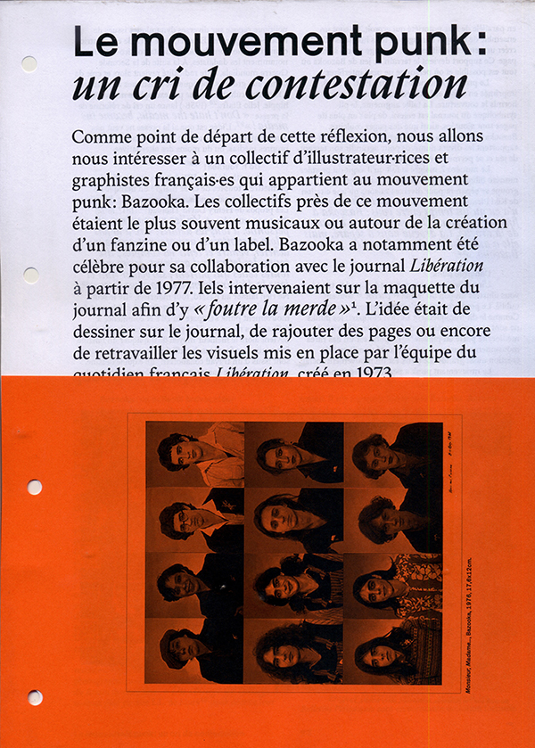
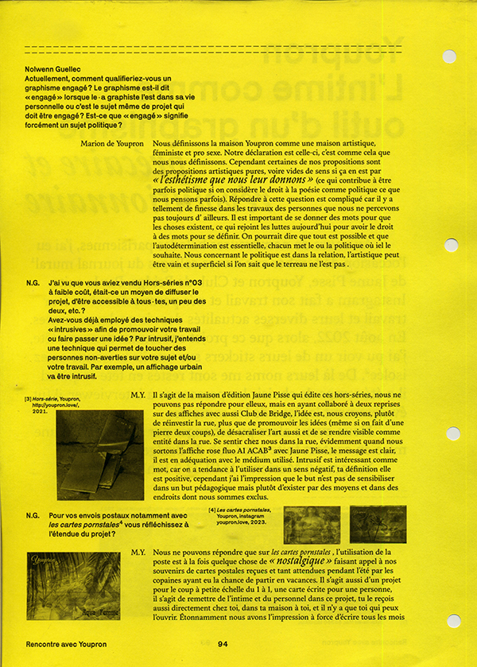
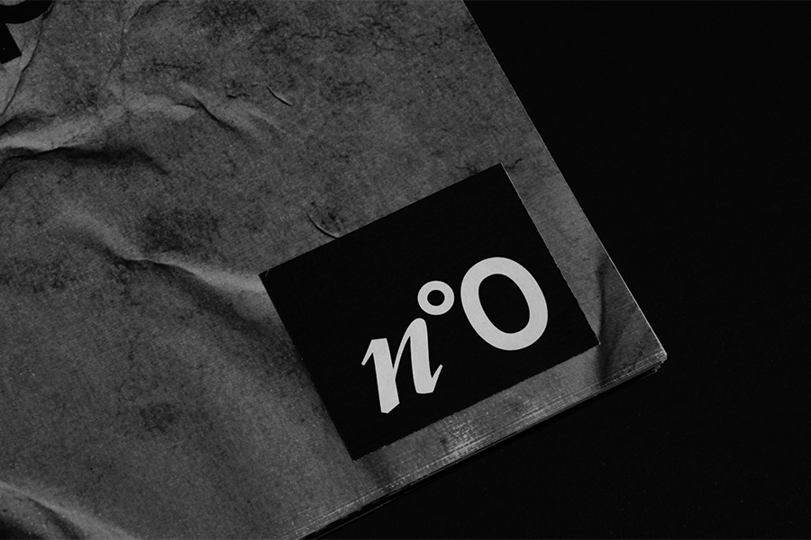
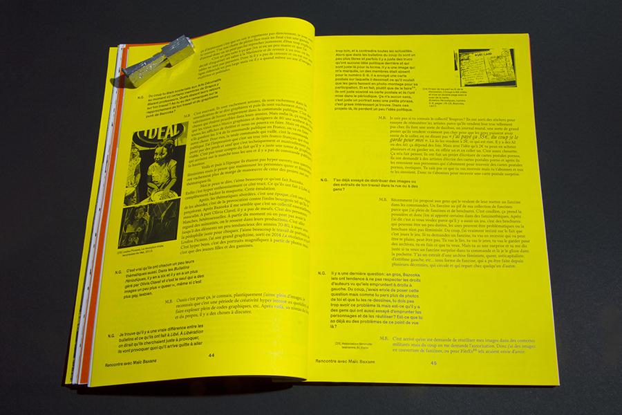
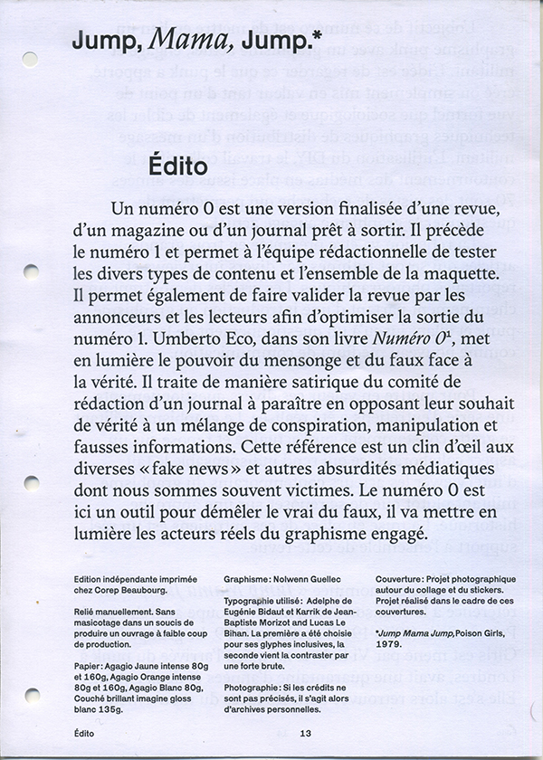
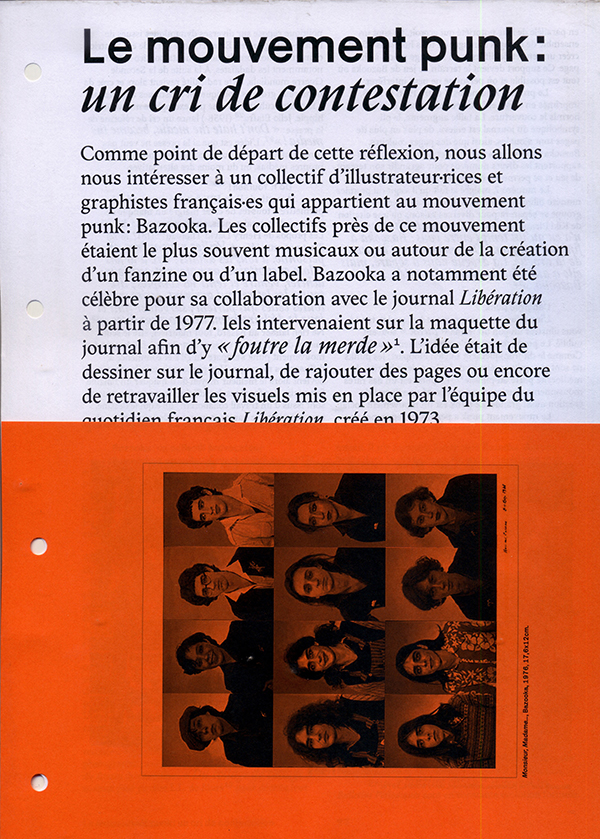
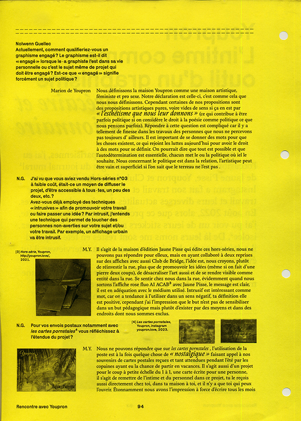
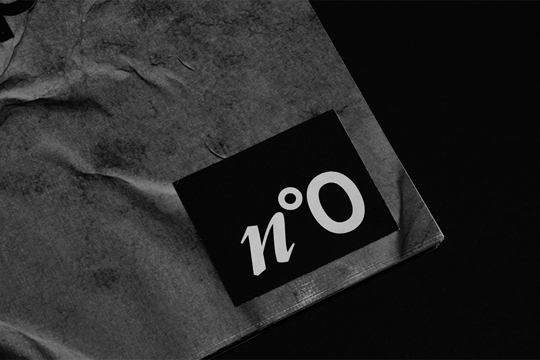
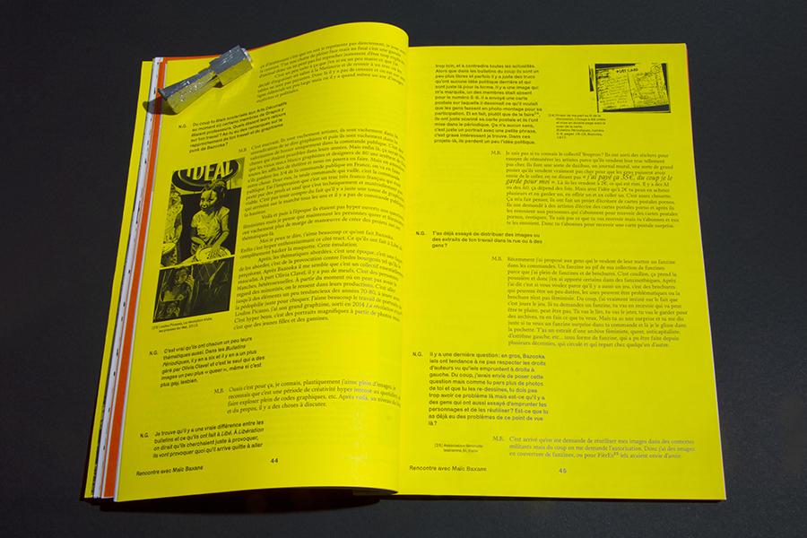
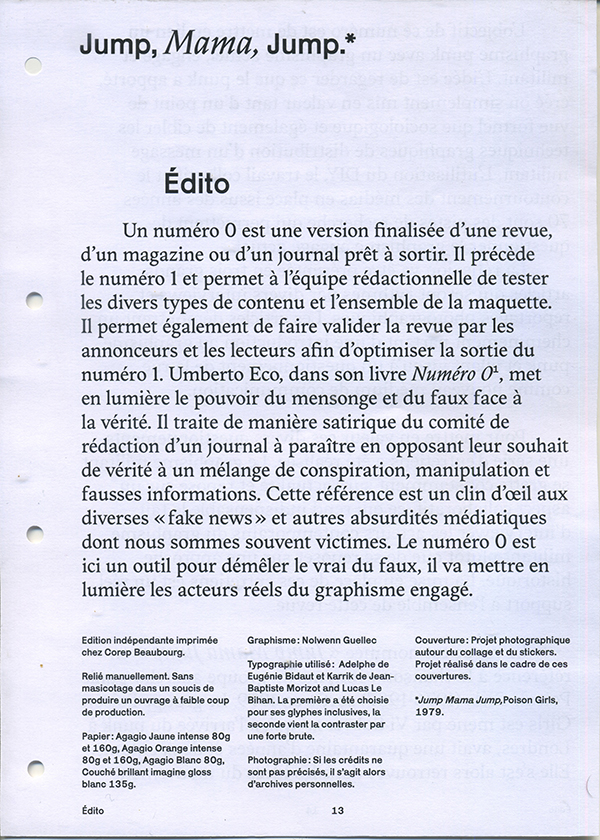

Jump Mama Jump

⁂ Graphisme engagé et techniques de diffusion : du mouvement punk au militantisme contemporain.
⁂ Jump Mama Jump est un des points de départ de cette recherche de mémoire. La chanson de Poison Girl appelle à agir peu importe notre âge, notre genre ou notre métier. Ce projet entend montrer une évolution et une construction du graphisme militant contemporain comme héritant du graphisme punk. Il aborde donc l’énergie punk, l’action, le DIY, le collage, la technique précaire, la place du collectif, l’entraide, l’apprentissage, etc.
⁂ L’ensemble de cette réflexion repose sur une série d'entretiens menés sur 6 mois entre juillet 2022 et janvier 2023 auprès de graphistes et artistes contemporain·es afin d’être au plus proche de l’actualité. Sous forme de revue, vous pourrez alors lire les entretiens dans l’ordre que vous souhaitez, et alterner reportages photographiques et articles (la lecture linéaire de ceux-ci est recommandée afin de permettre une compréhension totale des diverses références).
▷ A4 - 129 pages - 4 exemplaire
▷ Font : Adeplhe d'Eugénie Bidaut, Karrik de Jean-Baptiste Morizot et Lucas Le Bihan
▷ Janvier 2023
jump mama jump
 








